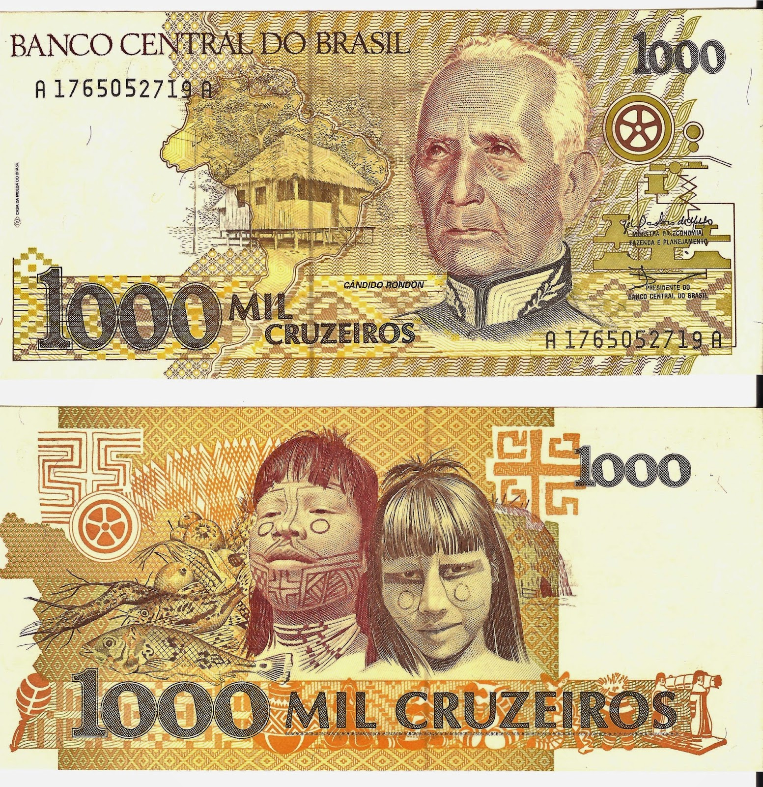
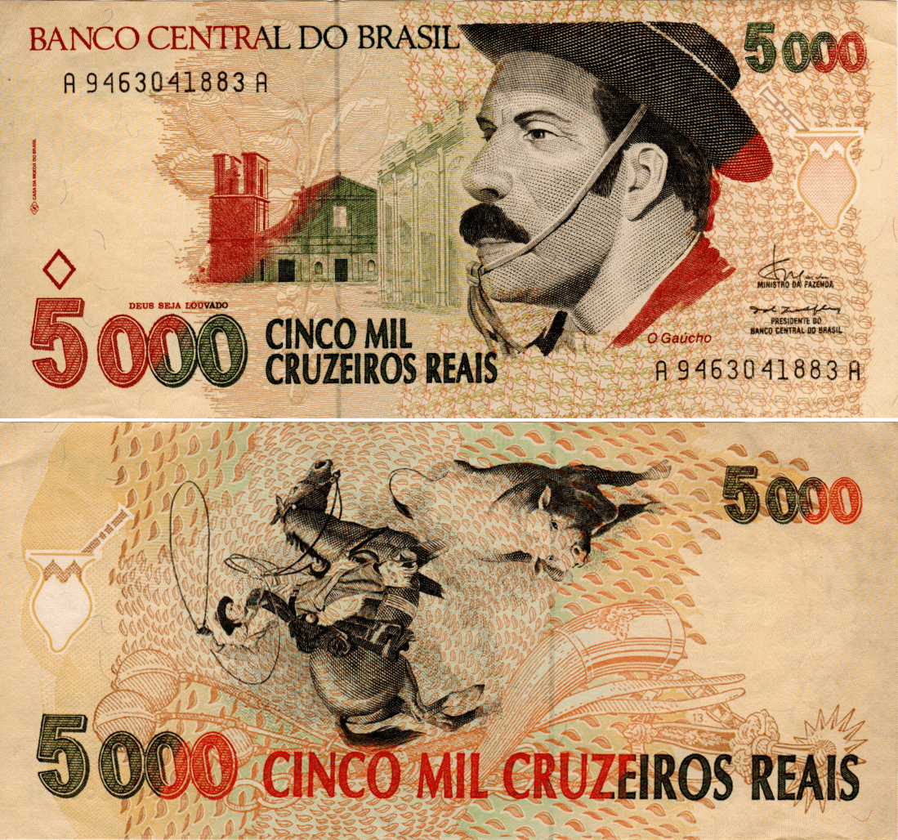

O pau-brasil foi a principal mercadoria utilizada no Brasil como elemento de troca entre os nativos e os europeus. Posteriormente, o pano de algodão, o açúcar, o fumo e o zimbo foram utilizados como moeda- mercadoria.
Linha do Tempo Brasil
1500
Pau Brasil

1834
Réis
Real (plural réis) foi o nome da unidade monetária utilizada no Brasil desde sua colonização até 5 de outubro de 1942, quando foi substituída pelo cruzeiro na razão de 1 cruzeiro por 1 mil-réis.
1911
Mil Réis
O Mil Réis foi uma das principais moedas do Brasil durante grande parte de sua história, incluindo o período imperial e inicial da República. Era uma unidade monetária que representava um valor significativo na época. Ao longo dos anos, o Mil Réis passou por várias reformas e mudanças.
1942
Cruzeiro
O cruzeiro foi uma moeda brasileira utilizada em diferentes períodos da história do país. Foi introduzido em 1942, substituindo o mil réis. Durante seu tempo de uso, passou por várias reformas e mudanças de valor, como o cruzeiro novo e o cruzado.
1967
Cruzeiro Novo

O "Cruzeiro Novo" foi uma moeda brasileira que desempenhou um papel importante na história econômica do Brasil. Introduzido em 1967, o Cruzeiro Novo substituiu o "Cruzeiro" anterior c omo parte de uma reforma monetária destinada a corrigir a inflação crescente.
1970
Cruzeiro

Em março de 1970, o padrão monetário voltou a chamar-se Cruzeiro, mantendo a equivalência com o Cruzeiro Novo. Um cruzeiro novo correspondia a um cruzeiro.
1986
Cruzado

O crescimento da inflação, a partir de 1980, foi a causa da instituição de um novo padrão monetário, o Cruzado. Um cruzado equivalia a mil cruzeiros. A maioria das cédulas do Cruzado foi aproveitada do C ruzeiro, recebendo carimbos ou tendo suas legendas adaptadas.
1989
Cruzado Novo

Em janeiro de 1989, foi instituído o Cruzado Novo, com unidade equivalente a mil cruzados. Os três últimos valores emitidos em cruzados receberam carimbos em cruzados novos e, em seguida, fo ram emitidas cédulas específicas do padrão.
1990
Cruzeiro

Em março de 1990, a moeda nacional voltou a se chamar Cruzeiro, com unidade equivalente a um cruzado novo. Novamente circularam cédulas carimbadas, com legendas adaptadas e cédulas do padrão.
1993
Cruzeiro Real

Em julho de 1993, uma nova reforma monetária foi promovida no país, instituindo-se o Cruzeiro Real. A unidade equivalia a mil cruzeiros. Foram aproveitadas cédulas do padrão anterior e emitidas cédulas novas.
1994 - Atual
Real

Em 1º de julho de 1994, foi instituído o Real, cuja unidade equivalia a CR$ 2.750,00. Não houve corte de zeros ou carimbagem de cédulas do padrão anterior. O Banco Central do Brasil determinou a substituição de todo o dinheiro em circulação Uma caracteristica marcante desta moeda é que em suas Notas estão estampados animais brasileiros